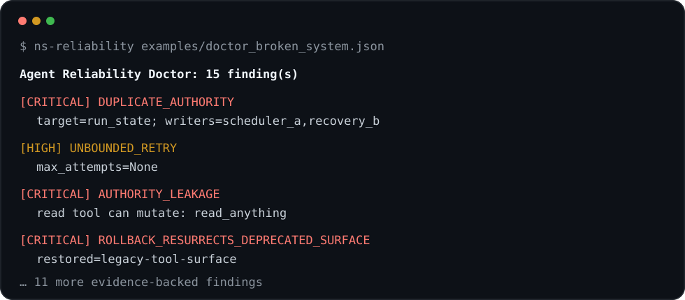

MCP Surface & Contract Quick Audit
₩990,000
Tool/schema inventory, authority leakage, stale contract and rollback-resurrection risk.
Find stale authority, duplicate execution, retry/resume defects, MCP contract drift, false completion and unsafe rollback — without replacing LangGraph, CrewAI, OpenAI Agents, MCP or your current stack.

Launch-stage offers. Technical/package readiness is proven; no external customer case study or market validation is claimed yet.
Tool/schema inventory, authority leakage, stale contract and rollback-resurrection risk.
Evidence-ranked findings across authority, retry/resume, tools, completion evidence and deploy/rollback.
One-live-commit/CAS/evidence design, bounded implementation and rollback/replay regression checks.
The Doctor normalizes evidence your stack already has. Use LangGraph checkpoints, OpenAI Agents traces, CrewAI Flow/task records, MCP tool schemas, deploy receipts or your own logs. Missing evidence remains UNKNOWN.
Integration / evidence guide →
Illustrative sample audit report →
No production credential is required by default. Public fit-check issues must contain no secrets, private code, customer data or proprietary logs. Customer evidence is accepted only after a separate scope and processing boundary is agreed.